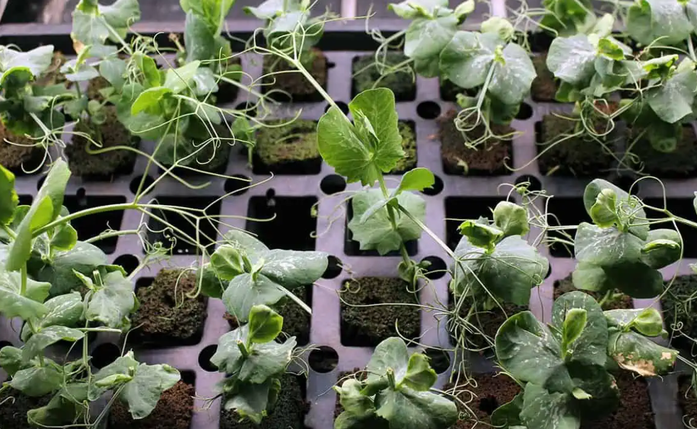
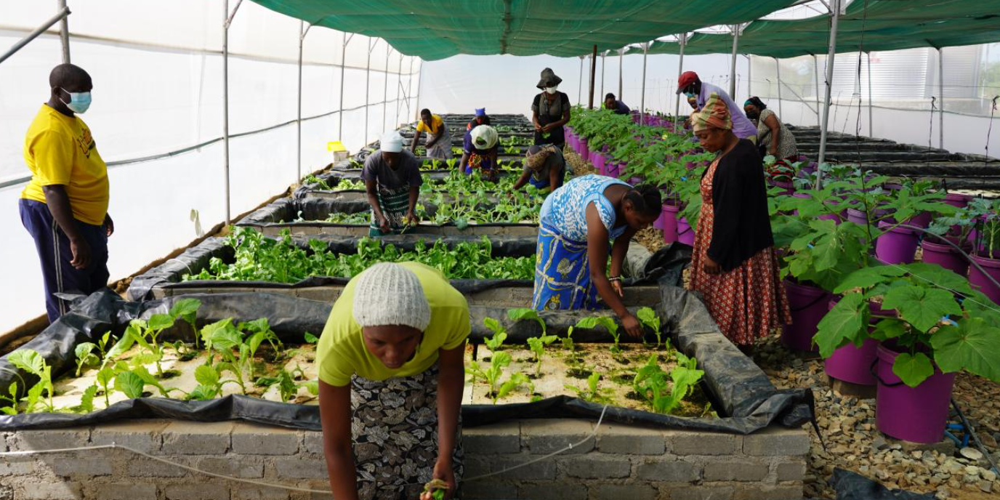
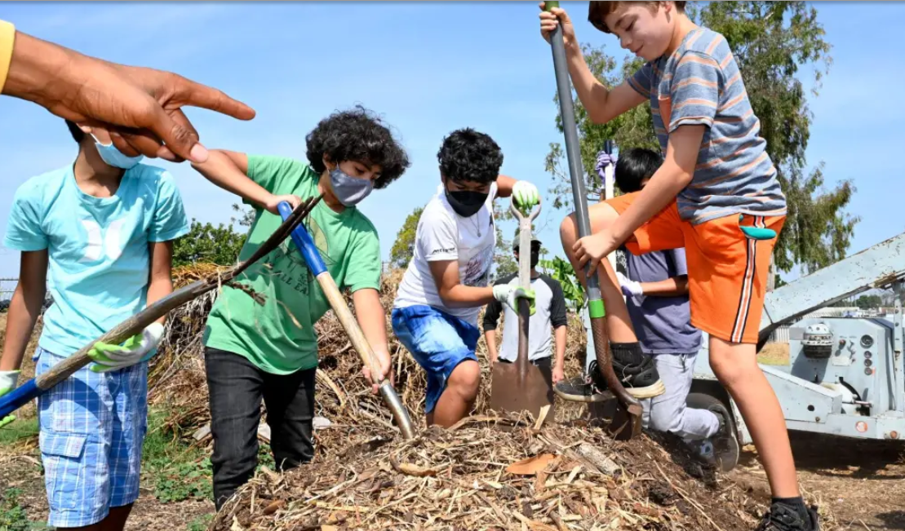
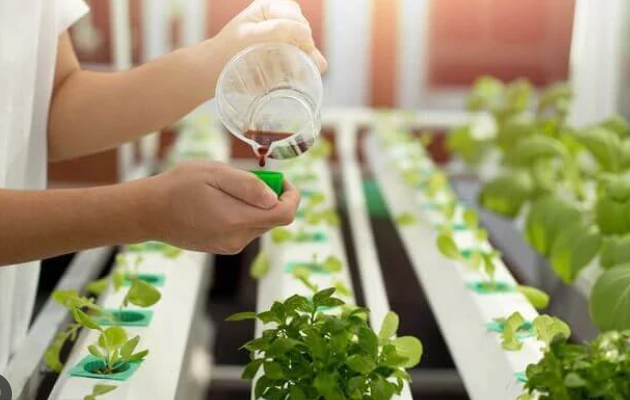

<
A Green Growing Revolution: Custom-Built Hydroponic Container Farms
Posted on January 1, 2024

What Is a Container Farm?
A container farm, at its core, is a self-contained agricultural system built within a shipping container. These farms utilize hydroponic systems, which means they grow plants without soil, using nutrient-rich water solutions.
By controlling the environment, light, temperature and nutrient delivery, these farms provide an optimal growing environment for crops year-round, regardless of external conditions.
The Benefits of Container Farms
Container farms offer a plethora of benefits that contribute to their rising popularity. First and foremost, they enable year-round cultivation, overcoming the limitations of traditional farming that heavily rely on weather patterns.
Additionally, container farms significantly reduce the need for arable land and water resources, making them a sustainable solution for urban areas and regions facing water scarcity. These farms also utilize vertical space efficiently, making them suitable for small spaces.
Vertical Farms vs. Traditional Farms
Vertical farms differ from traditional farms in several ways. They require minimal land area, making them feasible even in densely populated urban areas. They are not limited by soil quality or availability. This is because hydroponic systems provide plants with all the necessary nutrients directly through nutrient solution.
Traditional agriculture uses commercial farming techniques to grow crops at a large scale. Because of this, traditional agriculture can lead to increased usage of herbicide and pesticide. This can have unforeseen consequences for local ecosystems and neighboring farms, leading to shrinking animal habitats and diminishing growth rates.
Read More
How Your Youth Organization Can Grow Future Leaders With Hydroponic Skills
Posted on January 24,2024

Container farms can help youth develop these skills, while also providing a valuable service to the local community. In many urban areas, food deserts can present seemingly insurmountable challenges to fighting childhood health risks like obesity, or an abundance of processed foods, sugar, sodium and fat.
Because of our modern commercial agriculture, we have divorced our communities from the farmers that provide them with produce. This has stretched supply chains too far, resulting in crops arriving at grocery stores with significantly less nutrients than if the crop was harvested locally. If kids can not only gain agricultural skills, but also give back to their community in a meaningful way, it will inspire them to take further action to make the world a better place.
The Benefits of Container Farms for Youth Outreach
1. Provide Critical Skills in Agriculture/STEM Fields
2. Help Youth Interact with Growing Plants in a Safe Environment
3. Harvest Nutrient-Rich Produce for Other Community Projects
Read More
Container Farms for Summer Camp Activities
Posted on Feburary 12, 2023

Container farms offer campers the opportunity to learn about how plants develop, starting as seedlings, being transplanted to a hydroponic system and then developing over their time at the camp. Camps can learn STEM skills, and studies have shown that kids that grow their own vegetables are more likely to make healthy eating choices.
Right now, nearly 93% of children don’t eat enough vegetables, despite parents’ fervent prodding and pleading for them to eat more. If summer camps can be a part of instilling healthy food habits that are not only beneficial, but exciting and fun for kids, those lessons will follow them for a long time. When kids can have an active role in the process, it’s more likely that they’ll want to adopt better habits.
Imagine the look on parents’ faces when their kids return from summer camp and they’re not only raving about how good the meals were, but asking if they can grow vegetables at home for the whole family to enjoy!
The Benefits of a Container Farm Used for Summer Camp Activities:
1. 90% less water use than traditional agriculture
2. Less likely to experience pest infestations
3. Climate-controlled for growing in any climate
Read More
Are Hydroponic Crops More Nutritious?
Posted on January 2, 2024

In recent years, hydroponics has emerged as an innovative and efficient method of growing crops. As the world faces increasing challenges in feeding its growing population, hydroponics offers a promising solution.
Hydroponics presents a unique advantage when it comes to nutrient levels in crops. Unlike traditional soil-based farming, where plants search for nutrients in the soil, hydroponics provides a controlled environment where nutrients are delivered directly to the roots.
This targeted approach allows optimal nutrient absorption, resulting in higher nutrient levels in hydroponic crops. Studies have shown that hydroponically grown produce can have significantly increased levels of vitamins, minerals and antioxidants compared to conventionally grown counterparts.
Do Hydroponic Crops Grow Faster?
One of the key benefits of hydroponics is the accelerated growth rate of crops. By supplying a perfect balance of water, nutrients and oxygen, hydroponic systems create an ideal environment for plants to thrive.
With constant access to nutrient solution, hydroponic crops experience less stress and can focus their energy on rapid growth. As a result, hydroponically grown plants tend to mature faster and can be harvested earlier than soil-based plants, leading to higher yields and more frequent harvests.
In addition to this, controlled environment agriculture helps hydroponic crops grow optimally. Crops are healthier when you can control temperature, humidity and other environmental factors.
Read More